This page is about the Indian tourism and famous or royal tourist places in india.........
"We are dedicated to showcasing the best of India, a land that cradles history,
enchants with spirituality, and excites with adventure. Explore the 'Incredible India' experience with us.
Top Famous and Anicient Tourist Places in India---->(click on the links to know about it):-
1.jammum & kashmir
2.Agra
3.Delhi
4.Kolkata
5.Utthrakhand
6.Jaipur
7.Varanasi
8.Mathura
9.Udaipur
10.Mumbai
11.Ladakh
12.Manali
13.Nainital
14.Darjeeling
15.Goa
16.Amritsar
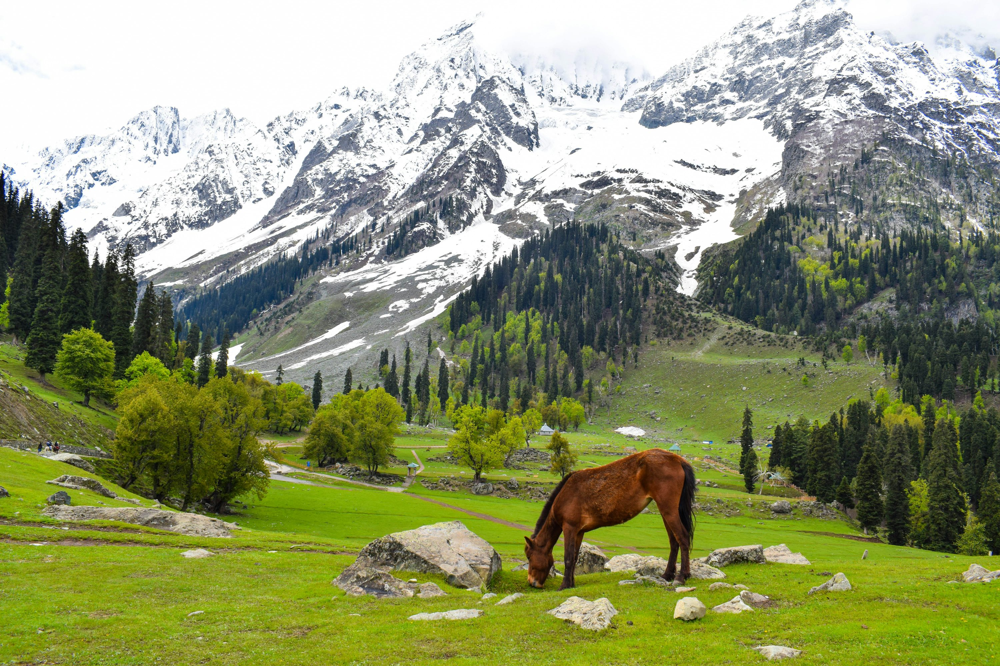
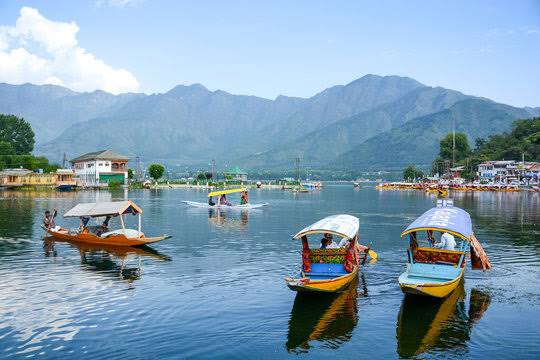
The Line of Control separates Jammu and Kashmir from the Pakistani-administered territories of Azad Kashmir and Gilgit-Baltistan in the west and north respectively. It lies to the north of the Indian states of Himachal Pradesh and Punjab and to the west of Ladakh which is administered by India as a union territory.[2] Insurgency in Jammu and Kashmir has persisted in protest over autonomy and rights. In 2019, the Jammu and Kashmir Reorganisation Act was passed, reconstituting the former state of Jammu and Kashmir into two union territories: Ladakh in the east and the residuary Jammu and Kashmir in the west.[22] Srinagar and Jammu jointly serve as the capital of the region, which is divided into two divisions and 20 districts. The area holds substantial mineral deposits, including sapphire, borax, and graphite. Agriculture and services drive the economy, with major contributors being horticulture, handicrafts, and tourism. Apple cultivation is one of the largest industries, employing 3.5 million people and producing 10% of the gross state domestic product. Despite these activities, over 10% of the population lives below the national poverty line.
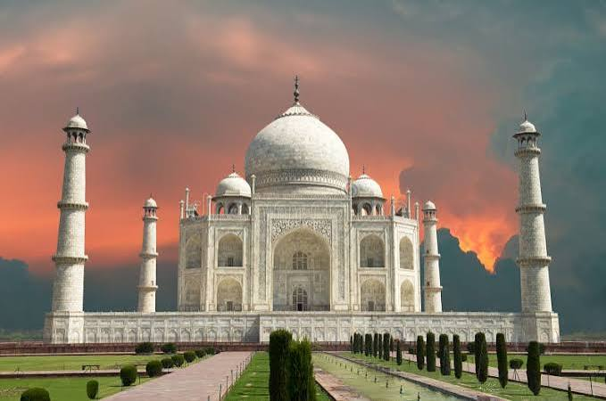
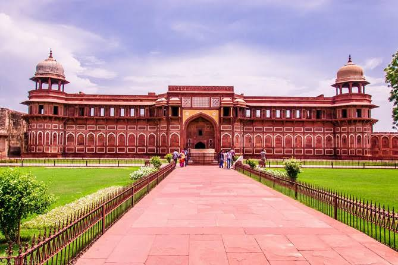
Agra is a historic Indian city in Uttar Pradesh, celebrated for its stunning Mughal-era architecture, particularly the Taj Mahal, Agra Fort, and Fatehpur Sikri – all UNESCO World Heritage Sites. Founded by Sikandar Lodi, the city reached its architectural peak under the Mughals and remains a major tourist destination, part of the famous Golden Triangle tourist circuit. Agra also offers a rich cultural experience through its festivals, crafts like marble inlay, and famous local sweets such as petha.
Historical Significance.
Mughal Empire: Agra was a vital center of the Mughal Empire, a period often considered a "golden age" of construction and art.
Founding: The city's foundation is credited to Sikandar Lodi in the 16th century, who moved the capital to Agra from Delhi.
Cultural Hub: The city is deeply connected to the Braj cultural region and served as a center for the religion of Dīn-i Ilāhī.
Architectural Wonders
The Taj Mahal: An iconic mausoleum, the Taj Mahal is recognized globally as one of the Seven Wonders of the World.
Agra Fort: A UNESCO World Heritage Site, this massive fort played a significant role in Mughal history and witnessed important events, including a battle during the Indian Rebellion of 1857.
Fatehpur Sikri: Another UNESCO site, this ancient city was once a capital but was later abandoned, leaving behind well-preserved buildings.
Cultural and Economic Aspects:-
Tourist Attraction: Agra is a major tourist destination, drawing visitors from around the world to its historical sites.
Golden Triangle: It is a key component of the Golden Triangle, a tourist circuit that also includes Delhi and Jaipur.
Crafts and Cuisine: The city is known for its intricate marble inlay work (Pietra Dura), traditional rugs, leather goods, and the sweet dish petha.
Modern Agra:-
Location: Situated on the banks of the Yamuna River in Uttar Pradesh, Agra is a populous city in northern India.
Festivals: Agra hosts various festivals, including Diwali, Eid, and the Taj Mahotsav, reflecting its diverse culture.
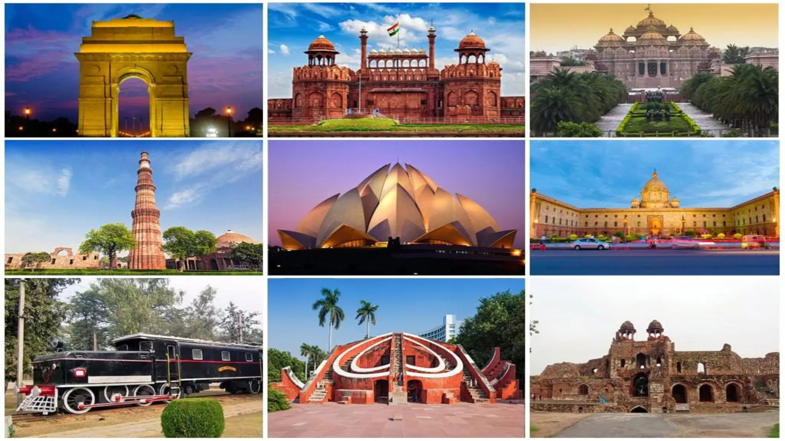
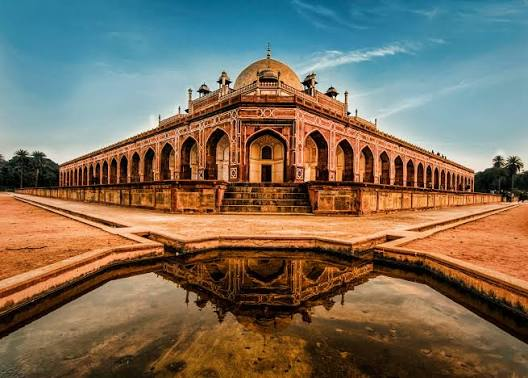
Delhi offers a rich array of tourist destinations, from historic UNESCO World Heritage Sites like the Red Fort, Humayun's Tomb, and Qutub Minar to modern architectural marvels such as the Akshardham Temple and Lotus Temple. Other notable attractions include the war memorial India Gate, the ancient observatory Jantar Mantar, and vibrant markets like Chandni Chowk and Dilli Haat, providing a blend of history, culture, and local experiences.
Historical & Architectural Landmarks
Red Fort (Lal Quila): A magnificent fort built by Emperor Shah Jahan and a symbol of Mughal architecture and power.
Qutub Minar: One of the city's three UNESCO World Heritage Sites, showcasing ancient architectural prowess.
Humayun's Tomb: Another stunning UNESCO World Heritage Site, offering a glimpse into the grandeur of past emperors.
India Gate: A prominent war memorial and a large public park.
Jantar Mantar: An ancient astronomical observatory from the 18th century.
Religious & Cultural Sites
Akshardham Temple: A vast and magnificent Hindu temple complex dedicated to Swaminarayan.
Lotus Temple: A serene and architecturally significant Baháʼí House of Worship.
Gurudwara Bangla Sahib: A beautiful and peaceful Sikh house of worship.
Jama Masjid: An iconic mosque, one of the largest in India.
Markets & Local Experiences
Chandni Chowk: A historic and bustling market famous for shopping and delicious street food.
Dilli Haat: A market where you can find ethnic handicrafts and food from various Indian states.
Connaught Place: A central hub for shopping, dining, and entertainment.
Green Spaces & Unique Spots
Lodhi Garden: A peaceful public garden featuring historic tombs, perfect for a relaxing stroll.
Hauz Khas Village: A vibrant neighbourhood with historical ruins, art galleries, and trendy cafes.
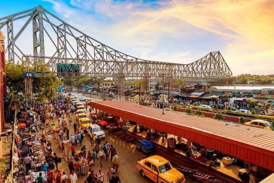
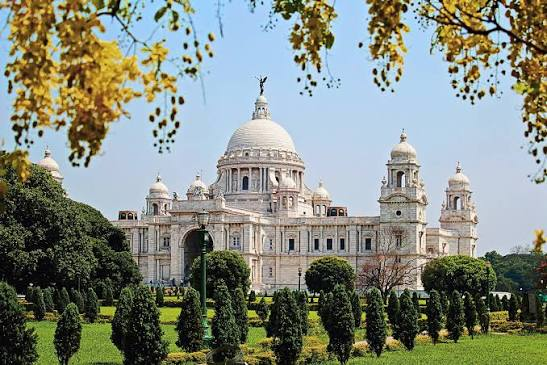
kolkata is called the "City of Joy" due to its vibrant culture, lively arts scene, renowned festivals like Durga Puja, and the people's ability to find happiness and community amidst adversity, a perspective famously popularized by Dominique Lapierre's novel, "The City of Joy". The nickname reflects a spirit of resilience, cultural richness, and the strong social connections fostered by its residents. Cultural Richness and Festivals Vibrant Arts and Culture: Kolkata is known for its strong appreciation of art, music, literature, and theater, contributing to a culturally rich environment. Festivals: Grand celebrations, particularly the Durga Puja, are central to Kolkata's identity and the spirit of joy in the city. People and Community Resilience and Optimism: The people of Kolkata possess an indomitable spirit, finding joy and hope even in challenging circumstances. Social Connection: A strong sense of community thrives through activities like \"adda\" (group conversations) and shared cultural experiences, fostering connections among people.
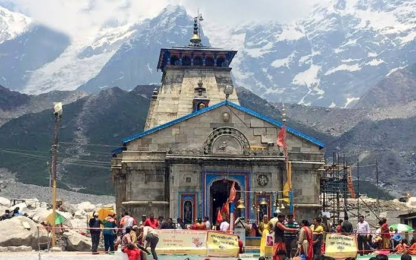
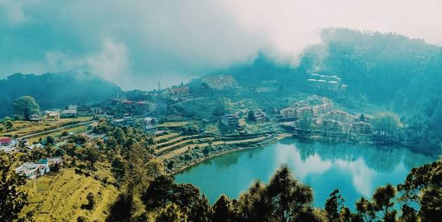
Uttarakhand, known as Devbhoomi or the "Land of the Gods," is a state in northern India formed in 2000, located in the Himalayan mountains, and bordered by China and Nepal. It's renowned for spiritual sites like Kedarnath and Badrinath, breathtaking natural beauty, dense forests, and its role as the source of the Ganges and Yamuna rivers. The state is home to diverse wildlife, rich biodiversity, and cultural heritage, with tourism playing a significant economic role, according to the National Portal of India. Geography & Environment Location: Nestled in the Himalayas, it shares international borders with China (Tibet) and Nepal. Topography: The state is largely mountainous with numerous glaciers, rivers, and snow-capped peaks like Nanda Devi. Biodiversity: Uttarakhand boasts rich flora and fauna, dense forests, and is a habitat for iconic species like the Bengal tiger and snow leopard. Environmental Significance: The state is a significant source of the sacred rivers Ganga and Yamuna. Culture & Spirituality Devbhoomi: Popularly known as the "Land of the Gods," it's a major spiritual destination for Hindus. Sacred Sites: Home to the famous Char-Dham pilgrimage sites (Gangotri, Yamunotri, Kedarnath, and Badrinath). Rich Heritage: The region has a deep spiritual heritage, reflected in the ancient names of its regions, Garhwal (Kedarkhand) and Kumaon (Manaskhand). Tourism Spiritual Tourism: Millions of devotees undertake pilgrimages to the sacred sites. Nature Tourism: Popular destinations include Nainital, Mussoorie, and Auli, offering stunning scenery. Wildlife Tourism: Jim Corbett National Park, the first national park in India, and Nanda Devi National Park are significant attractions. Economy Natural Resources: The state is rich in minerals like limestone, marble, and copper, as well as abundant water and forest resources. Agriculture & Horticulture: Its diverse climatic zones are suitable for various agricultural, horticultural, and floricultural activities. Tourism Industry: Tourism is a major economic contributor, attracting visitors for adventure, spirituality, and nature. Key Features Capital: Dehradun. Regions: Divided into Garhwal and Kumaon. Languages: Hindi is the official language, with Garhwali and Kumauni also spoken.
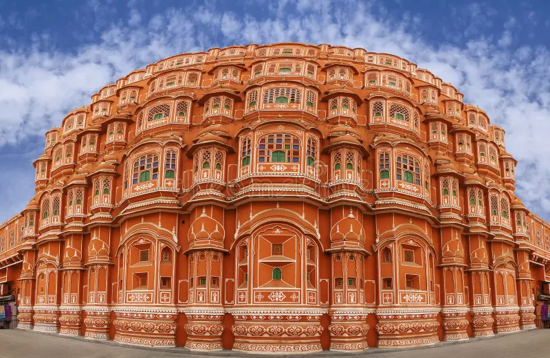
Jaipur is the capital of Rajasthan, known as the "Pink City," founded in 1727 by Maharaja Sawai Jai Singh II and notable for being India's first planned city. It was designed on a grid-iron model with a massive city wall, and was painted pink in 1876 to welcome the Prince of Wales. The city blends historical architecture, like the City Palace and Amer Fort, with a vibrant modern metropolis and is a major center for the gems and jewelry industry.
History and planning
Founding: Founded in 1727 by Maharaja Sawai Jai Singh II, a warrior, astronomer, and scholar.
Planning: Designed by Vidyadhar Bhattacharya, it was India's first planned city, with a grid-iron model inspired by Vedic architecture and a massive city wall with nine gates.
The Pink City: The city was painted pink in 1876 to welcome the Prince of Wales, a tradition that continues today for its state buildings and historical sites.
Attractions and economy
Architecture: Features include the City Palace, which blends Rajput and Mughal architecture, and Amer Fort.
Bazaars: The city's markets are famous for handcrafted goods like blue pottery, tie-and-dye scarves, and embroidered leather shoes.
Industry: Jaipur is a major center for the gems and jewelry industry, and is India's second most important gems and jewelry exporting center.
To explore more about the city, you can read an article about its history from Rajasthan Gov, a UNESCO World Heritage Centre page on the city's unique planning, or the GemsBiz website for details on its industry.
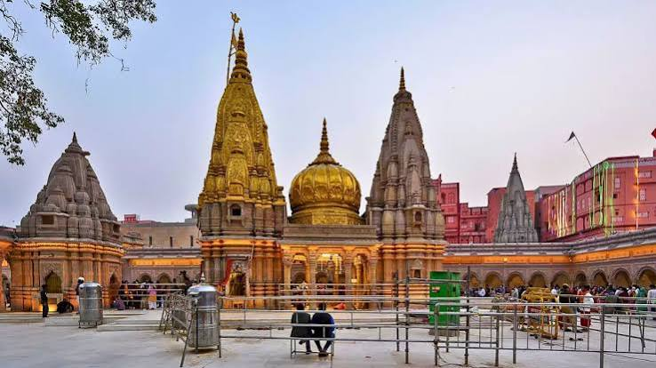
Varanasi is special due to its status as one of India's holiest cities for Hindus, its ancient religious significance, and its vibrant cultural and artisanal heritage. It is considered the spiritual center of Hinduism, famous for the sacred Ganges River, the ghats which are used for purification and cremation rituals, and temples like the Kashi Vishvanath Temple. The city is also a hub for traditional crafts, especially Banarasi silk sarees, and has a rich history as a center of learning.
Spiritual and religious significance
A holy city: Varanasi is one of the oldest continually inhabited cities in the world and is considered one of Hinduism's holiest cities.
The Ganges River: The city is built around the sacred Ganges River, which is believed to wash away sins.
The Ghats: The steps leading down to the river, or ghats, are central to life in Varanasi. They are used for bathing, prayer, and cremation ceremonies.
Moksha: Hindus believe that dying in Varanasi can lead to salvation and freedom from the cycle of birth and rebirth (moksha).
Cultural and historical significance
A center of learning: The city has been a renowned center of traditional learning and religious education for centuries.
Craftsmanship: Varanasi is famous for its handicrafts, particularly its intricate silk weaving in places like Sarai Mohana village, and is well-known for its silk sarees, metalwork, and wooden crafts.
Festivals and fairs: The city comes alive with numerous religious festivals throughout the year, such as Maha Shivratri, Holi, and Diwali.
Sarnath: The nearby site of Sarnath is a significant Buddhist pilgrimage destination where the Buddha gave his first sermon.
Other unique aspects
Energy and vibe: Visitors often describe Varanasi as having a unique and powerful energy that can be overwhelming but also spiritual.
Sunrise and boat rides: Morning boat rides on the Ganges River to watch the sunrise are a popular and iconic experience.
Ancient architecture: The city is filled with ancient temples, intricate architecture, and a rich history.
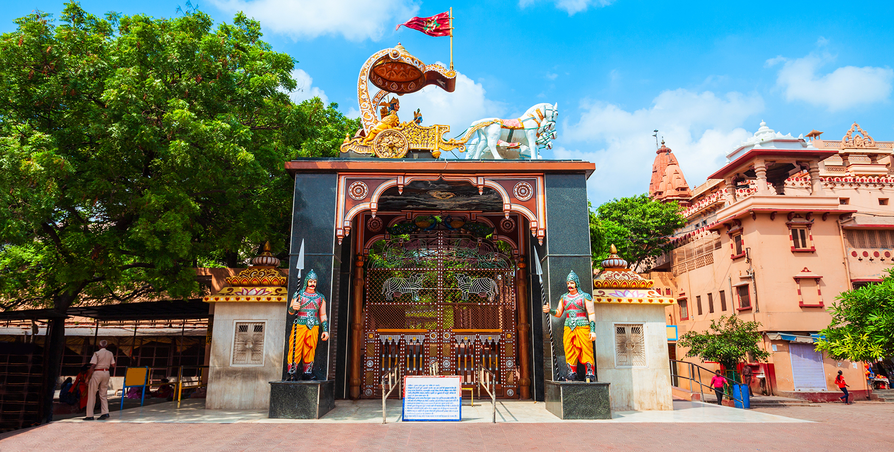
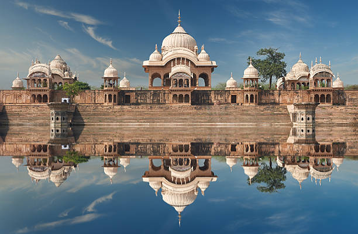
Mathura is famous as the birthplace of Lord Krishna and as a holy city for Hindus, being one of India's seven sacred sites. It is renowned for its numerous pilgrimage sites, including the Krishna Janmasthan Temple Complex, and for the sweet, Mathura peda. Spiritual Significance Birthplace of Lord Krishna: The city is considered the capital of Braj Bhoomi and is the legendary birthplace of Lord Krishna. Seven Holy Cities: Mathura holds significance as one of the seven sacred cities (Sapta Puri) in Hinduism. Major Attractions & Landmarks Krishna Janmasthan Temple: The main attraction, this complex is the site where Lord Krishna was born. Dwarkadhish Temple: A prominent temple dedicated to Lord Krishna, known for its elaborate architecture. Vishram Ghat: Located on the Yamuna River, this ghat is said to be the place where Krishna rested after defeating his uncle, King Kamsa. Culinary Fame Mathura Peda: The city is particularly famous for its peda, a sweet made from mawa (milk solids). AI responses may include mistakes. Learn more 30 Places to visit in Mathura India 2025 | Best Tourist places The Dwarkadhish Temple, touted as one of the holiest temples in Mathura, is famous all over the country for its elaborate architecture and paintings. Built in 1... Holidify Mathura a spiritual journey through time | Incredible India Incredible India About City || Nagar Nigam Mathura Vrindavan Nagar Nigam Mathura Vrindavan Mathura peda - Wikipedia Mathura peda is an Indian sweet dish that originated from Mathura in Uttar Pradesh, India. In Central India, sweets prepared from mawa (khoya) are very popular ... Wikipedia About Mathura - Vrindavan - Department of Tourism, Uttar Pradesh Steeped in history and mythology, Mathura holds immense significance for Hindus as the birthplace of Lord Krishna, one of Lord Vishnu's most cherished incarnati... upstdc.co.in Famous must Visit Temples in Mathura - Mathura Vrindavan Tour ... Vishram Ghat is located in the heart of Mathura and is easily accessible from all parts of the city. The ghat is open to visitors throughout the day, but it is ... MathuraHub #VALUE! Krishna Janmasthan Temple Complex:The birthplace of Lord Krishna, this temple complex is a must-visit for devotees and tourists alike. Dwarkadhish Temple:An anc... MakeMyTrip About Mathura, Introduction of Mathura, Mathura Profile For instance, the 'Vishram Ghat' on the Yamuna Waterfront is said to be the holy place where Krishna is supposed to have rested after killing his tyrannical and...more
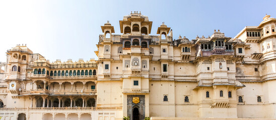
Udaipur is also known as the "White City" due to its white marble palaces and architecture. This nickname reflects the serene landscape of the city, which is further enhanced by its numerous lakes, leading to it also being called the "City of Lakes" and the "Venice of the East," as noted in this Brightsun Travel article and the Times of India article. White marble palaces: The most significant reason for the "White City" nickname is the extensive use of white marble in its historic buildings, especially the famous City Palace, built by Rajput kings. Lakes and landscape: The city is surrounded by a network of lakes, such as Lake Pichola and Fateh Sagar Lake, which add to its beautiful and serene atmosphere, contributing to nicknames like the "City of Lakes" and "Venice of the East".
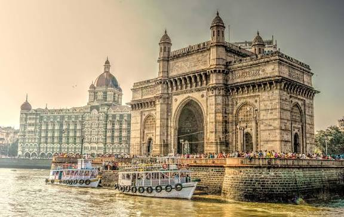

Mumbai is India's financial capital and the country's most populous city, known for being the hub of the Bollywood entertainment industry and having a rich, diverse culture. Situated on the west coast, this metropolis is the center of the Mumbai Metropolitan Region and is a major economic contributor to India, largely due to its port which handles a significant amount of the country's container traffic. The city was originally a collection of islands that were merged into a single landmass through land reclamation projects and is home to three UNESCO World Heritage Sites. Finance and Economy: Mumbai is India's financial capital and home to numerous businesses and the largest oil field in the country, Mumbai High. Culture and Entertainment: It is the heart of the Indian film industry, "Bollywood," attracting people from all over the country and is known for its vibrant street life and diverse cultural influences. History and Geography: The city is built on land reclaimed from a group of islands, and its history is closely linked to the British Raj. Landmarks: Notable landmarks include the Gateway of India and three UNESCO World Heritage Sites: the Elephanta Caves, the Victorian and Art Deco Ensemble, and the Chhatrapati Shivaji Maharaj Terminus.
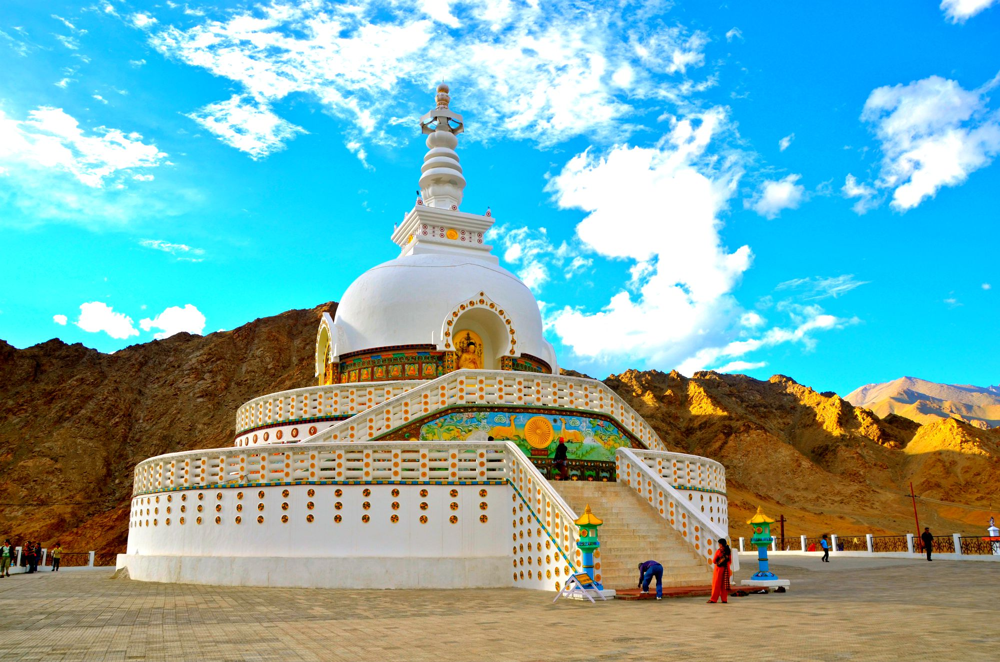
Ladakh is a mountainous region in India, known as the "Land of High Passes," with Leh as its capital. It is a high-altitude cold desert with dramatic scenery, including snow-capped peaks and deep valleys carved by rivers like the Indus. Culturally, it has strong ties to Tibetan Buddhism and is a major tourist destination for its monasteries, unique landscape, and festivals. Geography: Located in the great Himalayas, Ladakh is situated between the Karakoram and Zanskar ranges. The region is a rain shadow area, receiving very little rainfall, but is home to glaciers and rivers like the Indus. It's known for its extreme temperatures, with summer highs and winter lows dropping below freezing. Culture: Ladakh is often called "Little Tibet" due to its significant Tibetan cultural influence and is home to a majority Buddhist population. Major festivals like Hemis Tsechu and Losar are celebrated throughout the year. Islam also has a peaceful historical presence in the region. Economy: Tourism is a major part of Ladakh's economy, with visitor numbers increasing significantly in recent years. The region is also strategically important and rich in natural resources like solar and geothermal energy. History: The region has a long history, with early inhabitants being nomadic yak herders. Buddhism spread to Ladakh via central India and Tibet, leaving a lasting impact, and Islamic missionaries also played a role in its religious history. Administration: Ladakh became a separate Union Territory in 2019 and has its own administrative division, with both Leh and Kargil serving as divisional headquarters.
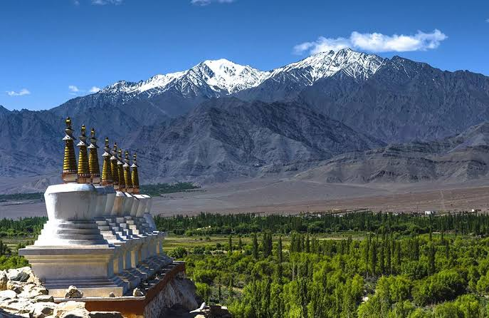
Manali Situated near the end of valley, Manali is one of the most attractive tourist spot not only of Himachal Pradesh, but of International fame also. Manali is synonymous streams and birdsong, forests and orchards and grandees of snow-capped mountains. Manali is the real starting point of an ancient trade route which crosses the Rohtang and Baralacha passes, and runs via Lahul and Ladakh to Kashmir while divergent road connects it with Spiti. Now the motor link have been provided up to Leh in Jammu & Kashmir, Pangi valley in Chamba and Kaza of Lahul & Spiti. There are regular bus services to these places from Manali during summer season. It is situated at a distance of 45 kms from Kullu. There is an interesting legend about Manali which goes to say that Manu, the author of ’Manu Samhita’, after the great deluge first stepped on the earth from the celestial boat at a place in this land. The particular spot where he established his abode was the present Manali which is regarded as the changed name of ’Manu-Alaya’, the abode of Manu. The temple dedicated to Manu is still existing in the Manali village.
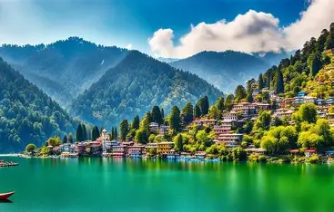
Nainital is a picturesque hill station in Uttarakhand, often called the "Lake District of India," centered around the crescent-shaped Naini Lake. Discovered by the British and transformed into a summer capital, its natural beauty is enhanced by colonial architecture, lush green hills, and activities like boating on the lake. Key attractions include the Naina Devi Temple, Snow View Point, the Mall Road (Govind Ballabh Pant Marg), and the Eco Cave Garden. Description of Nainital Location: Nestled in the Kumaon region of the Himalayas at an altitude of roughly 2,084 meters. Key Feature: The city is built around the stunning Naini Lake, which is bordered by Thandi Sadak and the Mall Road. Surroundings: The valley is embraced by deodar, oak, and pine forests and is surrounded by hills. Main attractions and activities Naini Lake: The heart of the town, popular for activities like boating and watching the reflections of city lights in the water at night. Naina Devi Temple: A significant religious site located on the northern shore of the lake. Mall Road: A central promenade lined with restaurants, hotels, and shops, now officially known as Govind Ballabh Pant Marg. Eco Cave Garden: A fun and educational spot for children to learn about the local ecology. Snow View Point: Accessible by cable car, it offers panoramic views of the Himalayas. Naini Peak (China Peak): The highest point in Nainital, providing breathtaking views for those willing to trek or ride a donkey. Nainital Zoo: Home to various species, including the Himalayan black bear and snow leopard. Governor House (Raj Bhavan): A historic building with beautiful gardens that is open to the public. Best time to visit Year-round destination: Nainital experiences different colors in each season, making it visitable anytime. Peak season: March to June offers pleasant weather. It becomes a winter wonderland with snowfall in December and January, making it a popular destination for Christmas and New Year.
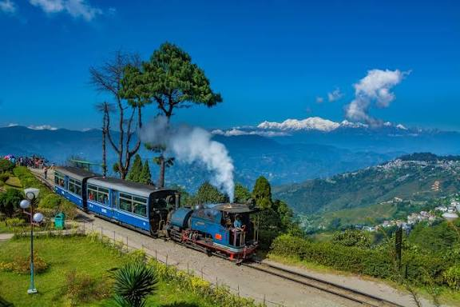
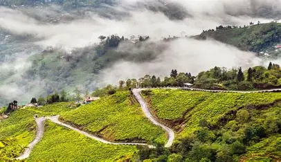
Darjeeling, a hill station in West Bengal, is celebrated as the "Queen of Hills" for its stunning natural beauty, including panoramic views of the Himalayas like Kanchenjunga. It is world-renowned for its lush tea gardens, but also attracts visitors with its colonial-era architecture, the historic Darjeeling Himalayan Railway (Toy Train), and diverse cultural heritage. The region offers a mix of tranquility and adventure, catering to nature lovers, trekkers, and those seeking a peaceful escape. Natural beauty and landscapes Mountain views: On clear days, Darjeeling offers breathtaking, unobstructed views of Kanchenjunga, the world's third-highest peak. Himalayan foothills: Situated in the Lesser Himalayas, the town is characterized by its scenic beauty, which includes beautiful flowers and a pleasant climate. Tea gardens: The region is famous for its sprawling, verdant tea plantations, which are a defining feature of its landscape. Culture and history Colonial influence: British colonial rule left a significant architectural and cultural mark on the town, which was once a sanatorium for soldiers. Cultural blend: Darjeeling is home to a rich blend of cultures from Bengal, Bhutan, Sikkim, and Nepal. Religious sites: Visitors can explore Buddhist monasteries and Hindu temples, reflecting the area's diverse religious landscape. Attractions and activities Darjeeling Himalayan Railway: The narrow-gauge "Toy Train" is a UNESCO World Heritage Site and a major tourist attraction, offering a scenic ride through the mountains. Trekking: Adventure enthusiasts can trek on trails like the one to Sandakphu, which provides spectacular views of the Himalayas. Local markets: The vibrant local markets are a great place to shop for local handicrafts, and goods imported from neighboring countries. Visitor experience Activities: Options range from enjoying the local cuisine and shopping to more adventurous activities like trekking. Best time to visit: October is often cited as an ideal time to visit, but the months of November, December, and January are also popular, particularly for those hoping for a glimpse of snowfall. Atmosphere: The town is popular with both Indian and international tourists who come for its unique charm and refreshing environment.
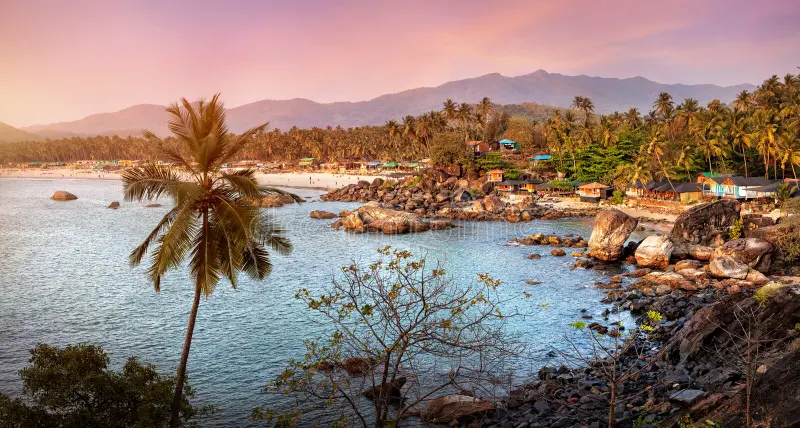
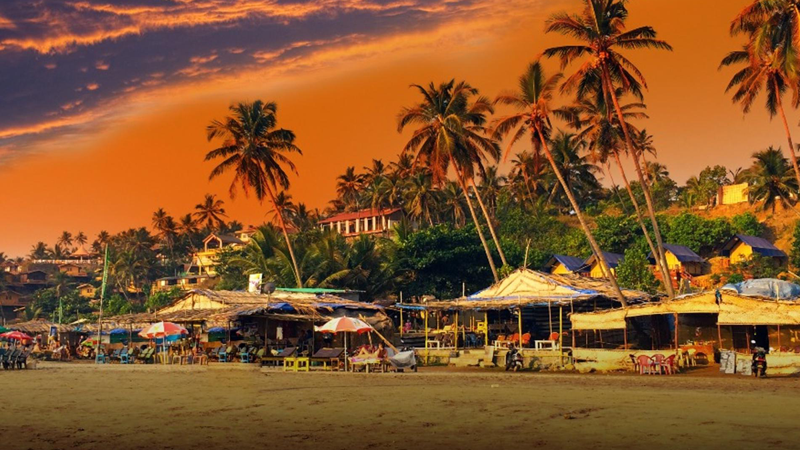
Goa is India's smallest state, located on the western coast, and is famous for its beautiful beaches, vibrant nightlife, and a unique blend of Indian and Portuguese cultures. It was a Portuguese colony until 1961 and gained statehood in 1987, a history reflected in its architecture and cuisine. The capital is Panaji, and it's a major tourist destination known for its tropical climate, natural beauty, and diverse attractions. Geography: Goa is bordered by Maharashtra to the north, Karnataka to the east and south, and the Arabian Sea to the west. Its coastline is a mix of sandy beaches and estuaries, with forested plateaus and the Western Ghats in the interior. Culture and History: It has a rich history, including a period of Portuguese rule that deeply influenced its culture, cuisine, and architecture. This mix is visible in landmarks like the Basilica of Bom Jesus and the Se Cathedral. Tourism: The state attracts tourists year-round with its sunny beaches, diverse wildlife, festive atmosphere, and active nightlife. Popular beaches include Calangute, Baga, and Anjuna. Economy: Tourism is a key industry, but Goa also has a strong economy based on agriculture, mining, and manufacturing, particularly in pharmaceuticals. Capital and Language: The capital is Panaji, and its official language is Konkani.
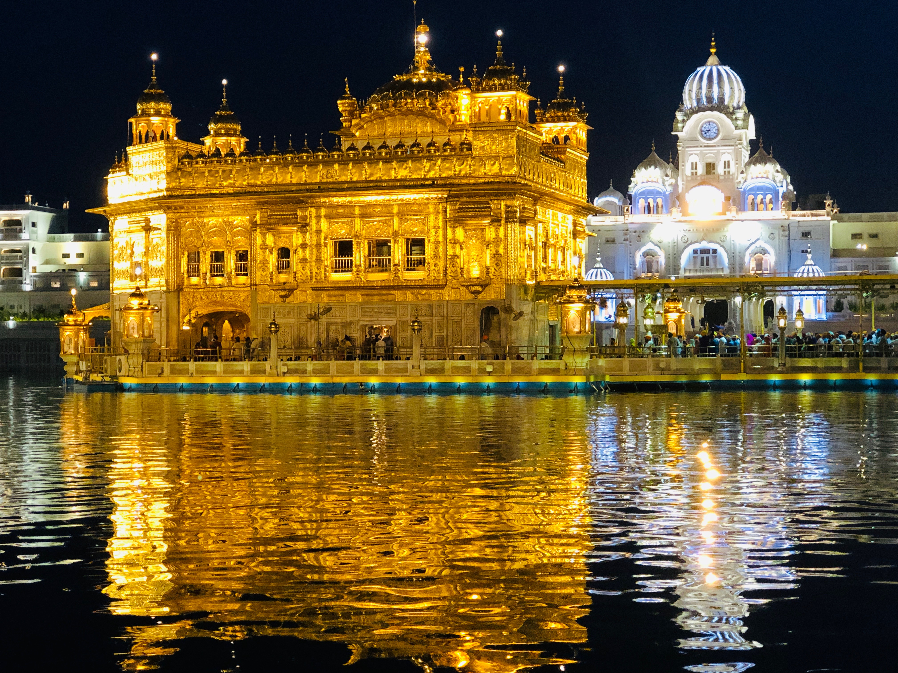
Amritsar is a major city in the Punjab state of northwestern India, renowned as the spiritual center of Sikhism due to the presence of the Harmandir Sahib (the Golden Temple). The city, founded by Guru Ram Das in 1577, is also a hub for commercial, cultural, and historical sites, including the Jallianwala Bagh memorial and the Wagah Border crossing. It is celebrated for its vibrant bazaars, rich Punjabi cuisine, and the daily free community kitchen (langar) at the Golden Temple. Key aspects of Amritsar Religion and spirituality: Amritsar is the spiritual heart of Sikhism, centered around the Harmandir Sahib (Golden Temple). The city's name comes from the "Amrita Saras," or "Pool of Nectar," a sacred tank surrounding the temple. History: Founded by Guru Ram Das in 1577, the city has a rich historical background. Key historical sites include the Jallianwala Bagh, a memorial to the victims of a 1919 massacre, and the Gobindgarh Fort, which features secret tunnels. Culture and daily life: The city is a major cultural and commercial center in Punjab. Its narrow lanes are filled with bustling bazaars selling local handicrafts, traditional Punjabi attire, and a wide variety of street food. The culinary scene is famous for dishes like Amritsari kulcha, tandoori chicken, and butter chicken. Landmarks and attractions: Golden Temple: The most important Sikh shrine, known for its glistening golden dome and the large langar that serves thousands of free meals daily. Wagah Border: A ceremonial border crossing where a vibrant and patriotic flag-lowering ceremony takes place every evening. Jallianwala Bagh: A historic garden and memorial site. Durgiana Temple: A prominent Hindu temple, often called the "Silver Temple".